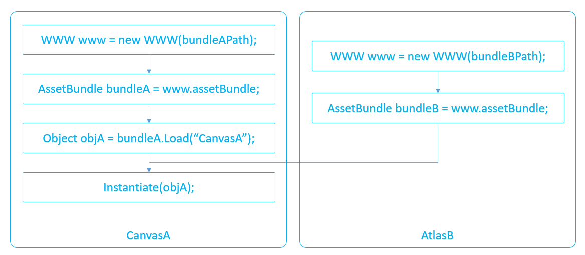

什么是AssetBundle
AssetBundle就像一个Zip压缩文件，里面存放着一些数据对象。它包含一些平台相关的运行时序列化对象。
Bundle之间也存在着依赖。AssetBundle带有三种压缩选项：不压缩，LZMA，LZ4。默认的就是LZMA，而BuildAssetBundleOptions.ChunkBasedCompression就是LZ4的压缩形式。另外我们有两种类型的Bundle，一种是我们场景的Bundle（*.unity打包的常务），另一种是松散的Bundle。
WebExtract & Binary2Text
AssetBundle对于大家来说会是一个黑盒子，其实在Unity的安装目录下（Data/Tools）有WebExtract & Binary2Text这两个工具，可以帮你把AssetBundle这个黑盒子打开。例如：升级版本AssetBundle变大了，二次构建AssetBundle出现差异了，AssetBundle内到底包含了那些资源等。
对于构建出来的AssetBundle，我们先通过WebExtract来解开，这时候可以得到一个文件夹，里面包含一些文件。
Usage: WebExtractor <unitywebfile>
AssetBundle加载基础
通过AssetBundle加载资源，分为两步，第一步获取AssetBundle对象，第二步是通过该对象加载需要的资源。而第一步又分为两种方式，下文中将结合常用的API进行详细的描述。
获取AssetBundle对象常用的API
直接获取AssetBundle:
- public static AssetBundle CreateFromFile(string path);
通过未压缩的Bundle文件，同步创建AssetBundle对象，这是最快的创建方式。创建完成后只会在内存中创建较小的SerializedFile，而后续的AssetBundle.Load需要通过IO从磁盘中过去。 - public static AssetBundleCreateRequest CreateFromMemory(byte[] binary);
通过Bundle的二进制数据，异步创建AssetBundle对象。完成后会在内存中创建较大的WebStream。调用时，Bundle的解压时异步进行的，因此对于未压缩的Bundle文件，该接口与CreateFromMemoryImmediate等价。 - public static AssetBundle CreateFromMemoryImmediate(byte[] binary);
该接口是CreateFromMemory的同步版本。 - 注：5.3下分别改名为LoadFromFile,LoadFromMemory,LoadFromMemoryAsync并增加了LoadFromFileAsync，且机制也有一定的变化，可详见Unity官方文档。
从AssetBundle加载资源的常用API
public ObjectLoad(string name, Type type);
通过给定的名字和资源类型，加载资源。加载时会自动在家其依赖的资源，即Load一个Prefab时，会自动Load其引用的Texture资源。public Object[] LoadAll(Type type);
一次性加载Bundle中给定资源类型的所有资源。public AssetBundleRequest LoadAsync(string name, Type type);该接口是Load的异步版本。
注：5.x下分别改名为LoadAsset,LoadAllAssets,LoadAssetAsync，并增加了LoadAllAssetsAsync。
AssetBundle加载进阶
注意点
- CreateFromFile只能适用于未压缩的AssetBundle,而Android系统下StreamingAssets是在压缩目录(.jar)中，因此需要先将未压缩的AssetBundle放到SD卡中国才能对其使用CreateFromFile。
- iOS系统有256个开启文件的上限，因此，内存中通过CreateFromFile加载的AssetBundle对象也会低于该值。
- CreateFromFile的调用会增加ResistenManager.Remapper的大小，而PersistentManager负责维护资源的持久化存储，Remapper保存的是加载到内存的资源HeapID与源数据FileID的映射关系，它是一个MemoryPool,其行为类似Mono堆内存，只增不减，因此需要对两个接口的使用做合理的规划。
- 对于存在依赖关系的Bundle包，在加载时主要注意顺序，举例来说，假设CanvasA在BundleA中，所依赖的AtlasB在BundleB中，为了确保资源正确引用，那么最晚创建BundleB的AssetBundle对象的时间点是在实例化CanvasA之前，即，创建BundleA的AssetBundle对象时，Load(“CanvasA”)时，BundleB的AssetBundle对象都可以不在内存中。

- 根据经验，建议AssetBundle文件的大小不超过1MB，因为在普遍情况下Bundle的加载时间与其大小并非呈线性关系，过大的Bundle可能引起较大的加载开销。
- 由于WWW对象的加载是异步的，因此逐个加载容易出现下图中CPU空间的情况（选中帧处Vsync占了大部分）此时建议适当的同时加载多个对象，以增加CPU的使用率，同时加快加载的完成。

AssetBundle卸载
前文提到了通过AssetBundle加载资源时的内存分配情况，下面，我们结合常用的API介绍如何将已分配的内存进行卸载，最终达到清空所有相关内存的目的。
一·内存分析
在上图中的右侧，我们列出了各种内存物件的卸载方式：
- 场景物件(GameObject):这类物件可通过Destroy函数进行卸载；
- 资源(包括Prefab):除了Prefab以外，资源文件可以通过三种方式来卸载
1）通过Resources.UnloadAsset卸载指定的资源，CPU开销小；
2）通过Resources.UnloadUnusedAssets一次性卸载所有未被引用的资源，CPU开销大；
3）通过Resources.Unload(true)在卸载AssetBundle对象时，将加载出来的资源一起卸载。
而对于Prefab,目前仅能通过DestroyImmediate来卸载，且卸载后，必须重新加载AssetBundle才能重新加载该Prefab。由于内存开销较小，通常不建议进行针对性的卸载。 - WWW对象：调用对象的Dispose函数或将其置为null即可；
- WebStream:在卸载WWW对象以及对应的AssetBundle对象后，这部分内存即会被引擎自动卸载；
- SerializedFile:卸载AssetBundle后，这部分内存会被引擎自动卸载;
- AssetBundle对象：AssetBundle的卸载方式有两种：
- 通过AssetBundle.Unload(false),卸载AssetBundle对象时保留内存中已加载的资源；
- 通过AssetBundle.Unload(true),卸载AssetBundle对象时卸载内存中已加载的资源，由于该方法容易引起资源引用丢失，因此并不建议经常使用；
二·注意点
在通过AssetBundle.Unload(false)卸载AssetBundle对象后，如果重新创建该对象并加载之前加载过的资源的时候，会出现冗余，即两份相同的资源。
被脚本静态变量引用的资源，在调用Resources.UnloadUnusedAssets时，并不会被卸载，在Profiler中能够看到其引用情况。
推荐方案
通过以上的讲解，相信您对AssetBundle的加载和卸载有了明确的了解。下面，我们简单地做一下API选择上的推荐：
- 对于加载完后即卸载的Bundle文件，则分两种情况：优先考虑速度（加载场景时）和优先考虑流畅度（游戏进行时）。
1）加载场景的情况下，需要注意的是避免WWW对象的逐个加载导致的CPU空间，可以考虑使用加载速度较快的WWW.LoadFromCacheOrDownload或AssetBundle.CreateFromFile，但需要避免后续大量地进行Load资源的操作，引起IO开销（可以尝试直接LoadAll）。
2）游戏进行的情况下，则需要避免使用同步操作引起卡顿，因此可以考虑使用new WWW配合AssetBundle.LoadAsync来进行平滑的资源加载，但需要注意的是，对于Shader，较大的Texture等资源，其初始化操作通常很耗时，容易引起卡顿，因此建议将这类资源在加载场景时进行预加载。 - 只在Bundle需要加密的情况下，考虑使用CreateFromMemory，因为该接口加载速度较慢。
- 尽量避免在游戏进行中调用Resources.UnloadUnusedAssets(),因为该接口开销较大，容易引起卡顿，可尝试使用Resources.Unload(obj)来逐个进行卸载，以保证游戏的流畅度。
需要说明的是，以上内存管理交适合于Unity5.3之前的版本。Unity引擎在5.3中对AssetBundle的内存占用进行了一定的调整，目前我们也在进一步的学习和研究中。